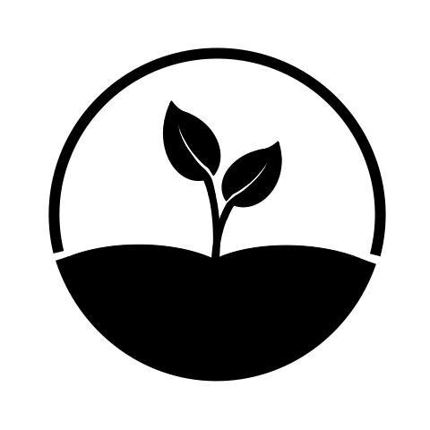

Experience
Research Engineer Intern
part of the Deep Learning team supervised by Suvrat Bhooshan
I am working on pipelines for large-scale data-extraction, training and deployment of Text-To-Speech (TTS) models.
DAAD WISE Fellow

co-supervised by David Kappel
and Anand Subramoney
(and Mark Schöne!)
We extended the group's prior work [
Event-SSM] to the Mamba SSM and
tested it on Event-stream and Point-cloud datasets.
I also helped develop a hardware-aware implementation by modifying the
CUDA kernels from the original
Mamba implementation.
The method scales to extremely long sequences (2
64!) of events and is amenable to recent language-like unsupervised pretraining methods.
Our work is on
arXiv, I also presented this
poster at
IndoML'24.
Undergraduate Research Assistant


co-supervised by Ashwin Srinivasan,
Tanmay Verlekar
and Sidong Liu
I worked on several projects around Machine Learning for Healthcare during my time at the lab.
Recently, I helped develop an implementation for the
PXP protocol (also developed by the lab).
We use LLMs to simulate human-LLM interactions, verify the theory and provide insights into the relation between
intelligibilty performance on simple tasks in
radiology and retrosynthesis
[
arXiv /
GitHub].
We also developed a
spatiotemporal graph convolution network for ataxic gait detection, which works
end-to-end from raw videos to detection and severity prediction [
arXiv].
We are in the process of releasing an empirical study of harmful / beneficial machine learning with real-world
radiology data, inspired by the
human-window hypothesis.
I won the first prize in an ACM Goa event for this work's presentation
[
slides].
Finally, I also helped benchmark LLMs for radiology report generation and as a judge for evaluation, we also proposed a
simple solution from our observations, we'll release this to arXiv soon!
Research Intern


supervised by Bharath Ramsundar
I contributed to the
DeepChem library, co-developed flexible
MolGAN and Normalizing Flow implementations in
PyTorch [
arXiv /
NeurIPS Poster]
and tutorials [
1]
[
2]
[
3]
[
4]
[
5]
on materials science and equivariance.
I also developed a preliminary pipeline for arbitrary property optimization for materials before I left the team in January'25.
President

Previously General Secretary for the year 2023-24.
I've helped create two induction assignments for the group,
[
2024] and
[
2025].
I present frequently at the group's weekly meetings (e.g. on Deep SSMs [
video]),
I started a blog-posts initiative, our first blog-post on
Graphormer
was accepted to the
GRaM Workshop at ICML'24.
I have also co-led 2 AI Symposiums in [
2023]
and [
2024].
Lastly, I helped write simple GPU runners for our
reproduction
of
Teaching CLIP to Count to Ten.

{kind=link}
{kind=link}